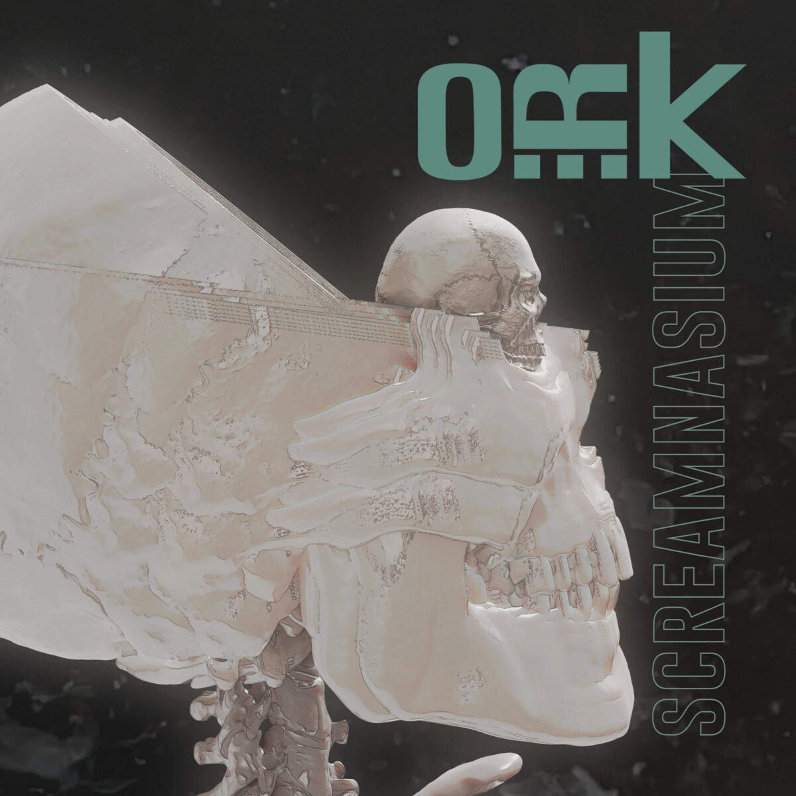

Per gli O.R.K. siamo al quarto album del progetto. Si definisce un percorso per questo progetto nato
apparentemente come un super-gruppo, ma che negli anni ha dimostrato una certa amalgama tra i
componenti, tutti di grande esperienza e dal valore già dimostrato in diversi progetti dalla risonanza
internazionale. Il cantante e tastierista Lorenzo Esposito Fornasari (conosciuto come Lef), il
chitarrista Carmelo Pipitone (Marta sui tubi), il batterista Pat Mastelotto (King Crimson, Stick men) e
il basso di Colin Edwin (ex Porcupine Tree), come ingredienti niente male. Per il progetto
fortunatamente non sono mancate neanche le idee e quindi siamo qui a parlare del quarto lavoro
‘Screamnasium’ che sarà presentato sui palchi europei nel tour in programma.
A differenza dei precedenti lavori, questo quarto album si dimostra essere più compatto, forse più
ragionato, meno estroso e imprevedibile rispetto ai precedenti. Alle sperimentazioni dei lavori
precedenti si è sostituito un songwriting più incentrato sulle linee vocali, risultano infatti le parti
strumentali molto funzionali al cantato, a sostenerlo, accompagnarlo, difficilmente a creare stacchi, a
portare avanti e rendere protagonista il singolo strumentista. Passando alle tracce, l’album si apre con
‘As I leave’ singolo di lancio dell’album, molto orecchiabile e allo stesso tempo potente nei suoni,
curati e che evidenziano una produzione di alto livello che ovviamente ci si aspettava da una band così
composta. ‘Unspoken words’ dal tiro più progressive e di impatto anche nelle linee vocali. Gran bel
lavoro della sessione ritmica che sostiene perfettamente la voce e la sfuriata della solista in chiusura
di brano. In ‘Consequence’ troviamo una interessante collaborazione con Elisa: le voci si intrecciano
esaltando le doti di ambo i cantanti. ‘I feel wrong’ è un brano molto interessante che fa pensare al
filone più neo progressive, legato ad atmosfere molto aperte e ad una certa ricercatezza del cantato.
Eco a mio avviso del progetto Guilt Machine ed altro che non riesco proprio a richiamare alla mente.
‘Don’t call me a joke’ è il secondo singolo estratto dall’album, supportato anche esso da video
musicale. Molto orecchiabile, catchy, potrebbe dare molta risonanza alla band anche oltre a territori
più progressive, alternative e rock in generale. ‘Hope for ordinary’ si fa notare per una ritmica molto
incalzante, che da il la a seconde voci molto particolari. Il cantato guida poi lo sviluppo della
traccia che non riesce tanto a convincere non trovando una propria identità. Le parti strumentali non
aiutano e rendono questo il passaggio più debole del lavoro degli Ork. ‘Deadly bite’ riporta il livello
su e di molto. Energica, dalla bellissima linea vocale. Le parti strumentali non guadagnano mai la scena
ma aiutano molto l’atmosfera generale della traccia, creando una tensione che coinvolge e tiene viva
l’attenzione. Una delle tracce migliori dell’album, con una grande prova compositiva ed esecutiva del
cantato. ‘Something broke’ parte con un arpeggi di chitarra che definisce da subito l’atmosfera del
brano, molto Leprous, anche nelle prime parti del cantato. Piccolo intermezzo di batteria, una via di
mezzo tra Gavin Harrison e Danny Carey. Brano piacevole e poteva essere impreziosito ancora, forse con
parte solista finale. ‘Lonely crowd’ è la ballata dell’album, a tratti Porcupine tree nei cori, a tratti
Pain of salvation quando la voce va su e la traccia acquista teatralità. Ultima traccia, ‘Someone
waits’: intro a base di archi, originale, voce pronta ancora a catturare e a prendere la scena. La voce
pennella, gli archi la seguono, per poi giungere ad una parte ritmata inattesa che attiva e amplia lo
spretto del brano. Parte solista delle tastiere che si intreccia verso il finale con gli archi, che
chiudono infine l’album, forse troppo rapidamente, lasciando un senso di incompletezza.
Un album interessante, forse troppo incentrato sulla voce che da grande prova di ricercatezza e
carattere. Per il contesto del progetto, sperimentale e progressive, ci si aspettava forse qualche
exploit in più da parte della parte strumentale, sono rari infatti anche intermezzi ritmici che
potrebbero soddisfare credo maggiormente i fan. Un progetto che comunque prende forma, si definisce con
questo nuovo capitolo, rafforzando quindi il legame tra i componenti della band e promette bene per
release future. Chicca finale: la grafica è frutto della collaborazione tra un tale di nome Adam Jones e
Denis Rodier (Marvel/DC Comics).
Tracklist
| # |
Title |
| 1 |
As I Leave |
| 2 |
Unspoken Words |
| 3 |
Consequence (feat. Elisa) |
| 4 |
I Feel Wrong |
| 5 |
Don’t Call Me A Joke |
| 6 |
Hope For The Ordinary |
| 7 |
Deadly Bite |
| 8 |
Something Broke |
| 9 |
Lonely Crowd |
| 10 |
Someone Waits |
Lineup
Lorenzo Esposito Fornasari – voce e tastiere
Carmelo Pipitone – chitarra
Colin Edwin – basso
Pat Mastelotto – batteria